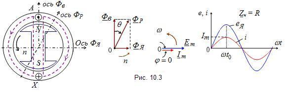

| При активной
нагрузке R (рис. 10.3) сдвиг фаз (угол
φ) между током и питающим её напряжением
равен нулю. Пренебрегая падением напряжения в обмотке якоря, т.
е. полагая, что напряжение генератора равно его ЭДС 
Из рисунка видно, что над правой стороной северного
N и левой стороной южного S
полюсов ротора результирующий магнитный поток Фр
от воздействия потока Фя
возрастает, а над противоположными сторонами полюсов - уменьшается.
Возникает так называемая поперечная составляющая
реакции якоря. Ось результирующего магнитного потока Фр
синхронного генератора поворачивается на угол Θ
в сторону, противоположную вращению ротора. Чем больше нагрузка
(ток I), тем больше угол Θ.
Увеличение тока нагрузки (угла Θ)
сопровождается увеличением нагрузочного момента на валу первичного
двигателя, т. к. магнитные полюсы потоков Фв
и Фя
взаимно притягиваются (в генераторе полюсы ротора являются ведущими,
"тянущими" за собой полюсы результирующего магнитного поля). Следовательно,
активная нагрузка приводит к искажению магнитного
потока машины и появлению момента сопротивления на валу ротора. |